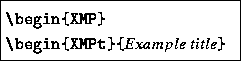

Often it is desirable to show text (computer programs, listings) ``literally'', i.e., ``as typed'', but at the same time it is still sometimes necessary to be able to use some LaTeX commands inside such an environment, eg. to highlight some text inside the example. Short literal text can be tagged with the \Lit command.
For multiple lines two ``example'' environments have been defined, namely

They are inspired by LaTeX's standard verbatim environment. As with the \Lit command, all characters, but \, { and } are typeset ``as typed'', i.e., without having to take special precautions. Inside the XMP environments all blanks and empty lines are output as such.